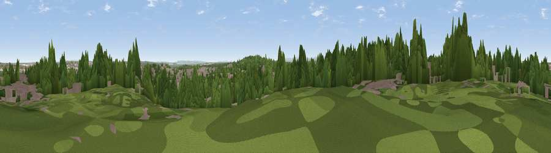

Viewpoint near Oxton
#32190 in England · top 77% of its area beats it · near OxtonThe view, rendered

A 360° render of this exact spot computed from the terrain model, tree cover and land cover — summer colours, afternoon light, calibrated against photographs of famous viewpoints. Real trees, hedges and buildings will differ in detail.
The panorama
Grey silhouette: terrain skyline in each direction (720 bearings, Earth curvature and refraction included). Dashed green: skyline with trees (+15 m) and buildings (+8 m) as obstacles. Blue strip: how far the ground is visible on each bearing.
Where the view opens
Wedge length = distance to the farthest visible ground on that bearing (vegetation-aware). Rings at 10, 25 and 50 km.
What fills the view
45% woodland · 40% built-up · 10% grassland · 4% water · 1% cropland
Angular shares of the visible panorama (visual magnitude), not map area. Landscape diversity 0.49 (0–1 Shannon).
Key numbers
More beautiful places nearby
The staircase of upgrades: each row has a higher view potential than everything closer. Driving times are estimates from straight-line distance, calibrated against real road routing — check an actual route before setting out.
| Place | Direction | Drive | Score |
|---|---|---|---|
| Viewpoint near Prenton | SSE · 1 km | ~4 min | 53.2 |
| Viewpoint near Bidston | NW · 3 km | ~7 min | 61.6 |
| Thurstaston Hill | WSW · 7 km | ~14 min | 66.8 |
| Viewpoint near Caldy | WSW · 8 km | ~17 min | 68.0 |
| Helsby Hill | ESE · 22 km | ~37 min | 74.6 |
| Beacon Hill | ESE · 24 km | ~39 min | 77.3 |
| Viewpoint near Harthill | SSE · 38 km | ~57 min | 80.5 |
| Rivington Pike | NE · 43 km | ~62 min | 81.9 |
53.37911, -3.04360 · source: screening · position refined by local search. Computed location — check access rights before visiting.